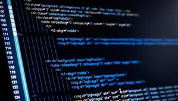
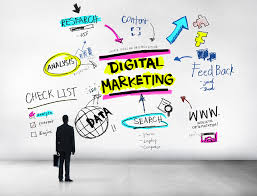
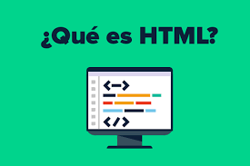
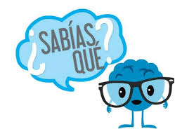
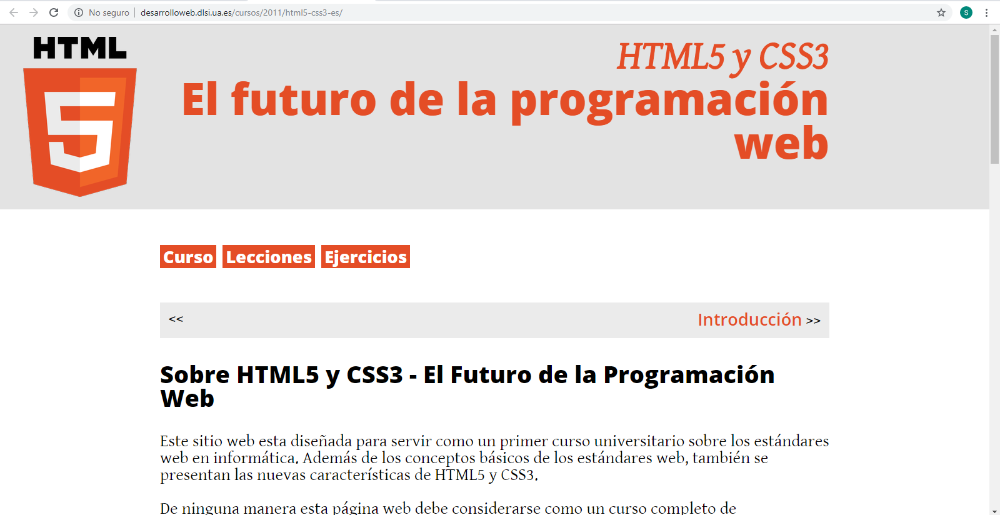
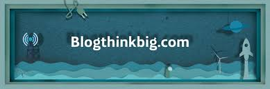

Sobre mi
Mi nombre es Susana Contreras Zacarías soy originaria de la Ciudad de Tuxtepec Oaxaca, actualmente estudio el septimo semestre de la carrera de ingenieria en sistemas computacionales en el Instituto Tecnologico de Tuxtepec, me gusta mi carrera porque ha llegado a formar parte muy indispensable en la vida cotidiana de cualquier ser humano, todos en la actualidad son propensos a ocupar un sistema, ademas que me gusta el conocimiento que dia a dia aprendemos.
me gusta el conocimiento que adquirimos dia con dia, esto para formar una carrera profesional y poder hacer mejoras para la sociedad.
Puedes contactarme mediante mi facebook y WhatsApp, o en el Instituto Tecnologico de Tuxtepec
VER MIS TRABAJOSServicios
DISEÑO WEB
El diseño web es una actividad que consiste en la planificación, diseño, implementación y mantenimiento de sitios web. No es simplemente la implementación del diseño convencional ya que se abarcan diferentes aspectos como el diseño gráfico web, diseño de interfaz y experiencia de usuario, como la navegabilidad, interactividad, usabilidad, arquitectura de la información; interacción de medios, entre los que podemos mencionar audio, texto, imagen, enlaces, video y la optimización de motores de búsqueda.

Resposive Design
Responsive Web Design o también conocido como Diseño Web Adaptable, es una técnica de diseño y desarrollo web que mediante el uso de estructuras flexibles (contenedores flexibles, imágenes y video flexibles) y junto con Media Queries especificados en CSS, logran adaptar un sitio web al entorno del dispositivo en el que se encuentre. Con ésta técnica se consigue que el contenido del diseño de tu sitio se vea bien y pueda ser bastante legible para los usuarios sobre el dispositivo con el que éste interactúe.
DISEÑO WEB
Desarrollo web significa construir y mantener sitios web, es el trabajo que tiene lugar en un segundo plano y que permite que una web tenga una apariencia impecable, un funcionamiento rápido y un buen desempeño para permitir la mejor experiencia de usuario. Los desarrolladores web son como duendes con poderes: nunca los ves, pero son los que hacen que todo esté bien y funcione de manera rápida y eficiente.
PROGRAMACION WEB
Desarrollo web significa construir y mantener sitios web, es el trabajo que tiene lugar en un segundo plano y que permite que una web tenga una apariencia impecable, un funcionamiento rápido y un buen desempeño para permitir la mejor experiencia de usuario. Los desarrolladores web son como duendes con poderes: nunca los ves, pero son los que hacen que todo esté bien y funcione de manera rápida y eficiente.
Autoadministrable
Una Página web Auto Administrable es una excelente opción para aquellas personas que desean administrar su propia página web sin la necesidad de recurrir a un webmaster o especialista.
Marketing Digital
El marketing digital es la aplicación de las estrategias de comercialización llevadas a cabo en los medios digitales. Todas las técnicas del mundo off-line son imitadas y traducidas a un nuevo mundo, el mundo online. En el ámbito digital aparecen nuevas herramientas como la inmediatez, las nuevas redes que surgen día a día, y la posibilidad de mediciones reales de cada una de las estrategias empleadas.
Mis materias favoritas :p
Base de datos
Programación web
Fisica
Calculo
Automatas 1
Telecomunicaciones

Conmutación y enrutamiento de redes de datos
Servicio social
Redes de computadoras
Inroducción a la programación
Sofware libre
Un poco de programación web
HTML
- 
- Aprendemos que en la programación Web, el HTML es el lenguaje que permite codificar o preparar documentos de hipertexto, que viene a ser el lenguaje comun para la construccion de una pagina Web.
conceptos importantes
- 
- Para realizar una pagina con la programación Web, se deben tener claros, tres conceptos fundamentales los cuales son, el URL(Uniform Resource Locators), es un sistema con el cual se localiza un recurso dentro de la red, este recurso puede ser una pagina web, un servicio o cualquier otra cosa. En resumen el URL no es más que un nombre,
que identifica una computadora, dentro de esa comutadora un archivo que indica el camino al recusrso que se solicita.El siguiente concepto dentro de la programación Web, es el protocolo encargado de llevar
la información que contiene una pagina Web por toda la red de internet, como es el HTTP(Hypertext Transfer Protocol).
Y por ultimo el lenguaje necesario cuya funcionalidad es la de representar cualquier clase de información que se encuentre
almacenada en una pagina Web, este lenguaje es el HTML(Hypertext Markup Language).
-
Lenguajes para el desarrollo web
- JavaScript
Se utiliza principalmente del lado del cliente aunque se puede utilizar del lado del servidor.
Actualmente y gracias a tecnologías como AJAX es utilizado para enviar y recibir información del servidor.
Lenguaje PHP
Es un lenguaje enfocado en la creación de webs dinámicas. Sus scripts son interpretados por el
servidor y genera código HTML. Requiere Apache o IIS con librerías de PHP. Hereda su sintaxis de C, Java y Perl.
Lenguaje Python
Considerado por muchos el lenguaje más limpio a la hora de programar. El código, al igual que JavaScript, es interpretado y no compilado.
Lenguaje Ruby
Como el anterior, es un lenguaje interpretado y está orientado a objetos. Hereda su sintaxis de Phyton y Perl.
El lenguaje puede cargar librerías de extensiones dinámicamente si el sistema operativo lo permite.
Además, es un lenguaje portátil.
"Blog"

El futuro de la programación web
¿Quieres o necesitas saber cuáles son las herramientas que utilizan html5/css3?
Dando clic en la imagen podras acceder a un sitio con mas información

¿Qué es el Blogthinkbig y cómo utilizarlo?
Blogthinkbig es un sitio donde puedes aprender a rpogramar desde cero.
Leer más dando clic en la imagen
